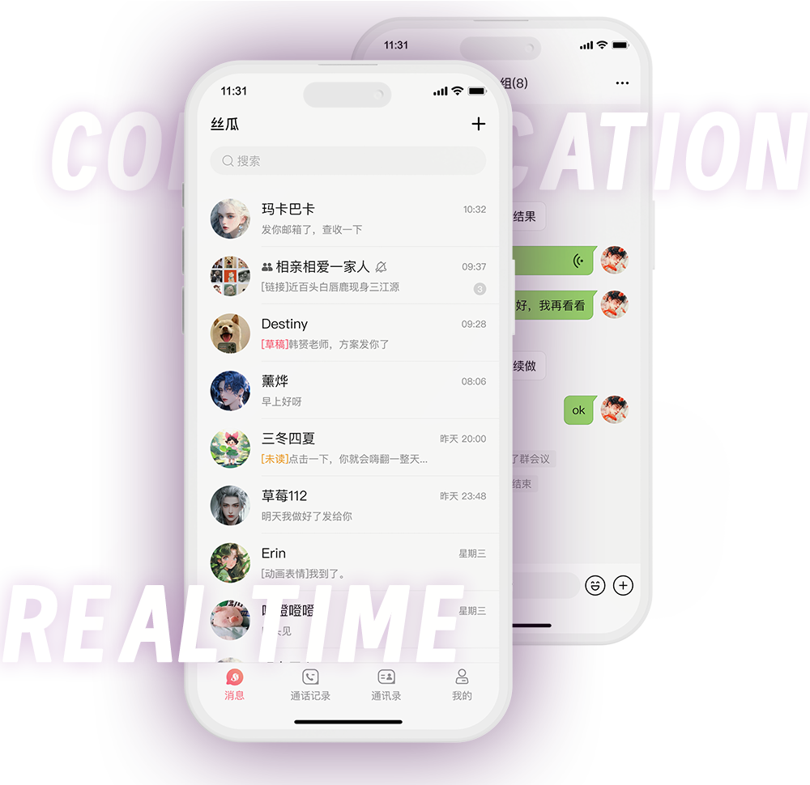

丝瓜聊天是什么软件？
丝瓜聊天是一款主打匿名社交的聊天软件，用户可在平台上以匿名身份进行即时聊天、语音通话或互动交流。该应用通常用于交友、倾诉或轻松社交，但因部分内容缺乏监管，曾被质疑存在隐私和安全风险。使用时应注意平台合规性与个人信息保护。

丝瓜聊天软件的基本介绍
丝瓜聊天的核心功能特点
支持匿名聊天模式： 丝瓜聊天主打匿名社交，用户无需提供真实姓名、头像或身份认证即可发起聊天，平台通过随机匹配让用户在不暴露隐私的前提下与陌生人进行实时交流。
内置语音互动与消息系统： 除了常规文字聊天，丝瓜聊天还支持语音对话、语音留言、语音聊天室等功能，部分版本还包含“语音速配”玩法，增强用户之间的即时互动与情感连接。
兴趣标签与匹配机制： 用户在注册或使用过程中可设置个人兴趣爱好标签，如情感、动漫、游戏、旅行等，系统会基于用户偏好进行智能匹配，提高聊天对象的相关性与互动粘性。
丝瓜聊天适合哪些用户群体
适合倾诉与情感交流需求者： 对于需要倾诉烦恼、寻求情绪发泄的用户来说，丝瓜聊天提供一个不带身份标签的空间，更容易建立安全感和信任感，让用户能更自由地表达内心。
面向年轻社交活跃人群： 丝瓜聊天的界面风格、功能设定和交互体验明显更贴近年轻用户，尤其是18至30岁的社交活跃群体，他们乐于尝试新型社交方式，追求轻松与个性化的交流。
对传统实名社交感到审美疲劳的人群： 对于不喜欢在实名社交平台中交流的用户，丝瓜聊天的匿名机制提供了一种逃离熟人圈的方式，让用户在无需承担身份压力的环境下探索新的人际关系。
丝瓜聊天的使用方式说明
如何下载和安装丝瓜聊天
通过应用商店下载安装： 用户可在手机中打开应用商店（如苹果App Store或安卓的华为应用市场、应用宝等），在搜索框中输入“丝瓜聊天”，找到带有官方标识的应用后点击“下载”并安装。
通过官网下载或扫码安装： 部分用户也可通过丝瓜聊天的官网或合作平台获取下载链接，部分页面提供二维码扫码下载功能，适用于无法在应用商店中搜索到软件的情况。
注意版本来源及权限设置： 安装前应确认下载来源正规，避免安装仿冒或带有恶意代码的应用。同时，在安装过程中根据提示授权必要的权限，如麦克风、通知等，以确保功能正常运行。
注册账号和登录流程步骤
使用手机号注册账号： 打开丝瓜聊天后，首次进入需要注册账号。用户可通过手机验证码快速注册，输入手机号后获取并填写短信验证码，即可完成账号创建。
设置用户昵称与兴趣信息： 注册完成后，系统会引导用户设置昵称、头像（可选）和性别信息，并选择兴趣标签，用于后续聊天匹配与内容推荐，是打造个性化社交体验的重要步骤。
登录与密码管理方式： 后续登录可继续使用手机号+验证码的方式完成快速登录。部分版本也支持设置密码、绑定微信或第三方平台账号以增强账号安全性，避免重复注册或数据丢失。

丝瓜聊天支持的社交功能
匿名聊天与兴趣匹配机制
支持随机匿名匹配功能： 丝瓜聊天的最大特点是支持匿名聊天，用户无需绑定真实身份信息即可发起对话，系统自动分配聊天对象，让交流过程更轻松、更无负担。匿名机制帮助用户更自在地表达情绪与想法。
基于兴趣标签智能推荐： 在注册或设置过程中，用户可以选择多个兴趣标签，如情感、美食、旅行、动漫等。系统会根据这些标签和用户的活跃行为进行智能推荐匹配，提升匹配的相关性和对话质量。
支持一对一与多人匹配： 除了常规的一对一匿名聊天，丝瓜聊天还提供多种聊天模式，如话题广场、互动圈子等多人社交场景，用户可参与群聊、围观他人对话，扩大社交圈层。
语音互动和实时交流体验
一键开启语音聊天功能： 除文字消息外，丝瓜聊天还支持语音互动功能，用户可以直接发起语音通话，适用于不想打字或希望更高效率沟通的场景，让交流更加真实自然。
语音房间增强社交氛围： 平台设有多人语音聊天室，支持用户创建或加入语音房，在房间中参与话题讨论、语音唱歌、互动游戏等。语音房设置轻松开放，适合快速破冰与结识新朋友。
支持语音留言与语音匹配模式： 用户还可以发送语音消息作为聊天方式，提升互动趣味性。同时，平台还提供语音匹配模式，让用户通过“声音”来选择匹配对象，带来更具沉浸感的社交体验。

丝瓜聊天是否安全合规
丝瓜聊天是否存在隐私风险
匿名机制可能带来身份误用： 虽然丝瓜聊天主打匿名社交，但这也意味着平台在监管上存在一定盲区。部分用户可能借助匿名身份发布不当言论或行为，对他人造成骚扰或信息风险。
数据采集范围不够透明： 一些用户反馈丝瓜聊天在注册过程中或使用时会请求多个敏感权限，如定位、麦克风、通讯录等，而其对数据如何使用、是否加密传输等方面的说明并不清晰。
聊天内容缺乏审核机制： 由于平台交流主要为私密对话，且部分功能支持实时语音，系统很难做到全程有效监管，这可能被个别不法用户利用进行违规内容传播或非法引导。
用户在使用中应注意哪些安全问题
避免泄露个人真实信息： 在使用过程中，用户应避免主动透露真实姓名、手机号、社交账号、地址等敏感信息，以防被恶意用户利用进行诈骗、骚扰或网络攻击。
拒绝下载不明链接或文件： 在聊天中如遇他人发送可疑链接、二维码或文件，不应轻易点击或下载，以防遭遇木马程序、钓鱼网站或恶意软件植入，造成手机被监控或数据丢失。
谨慎进行语音和视频互动： 虽然语音交流能拉近人与人之间的距离，但用户应注意语音房中是否存在录音风险，避免进行涉及隐私、敏感话题的语音内容，保护自身权益与形象安全。

丝瓜聊天与其他社交软件的区别
与探探、Soul等产品的功能对比
匹配逻辑侧重点不同： 探探以“左滑右滑”的颜值匹配为主，Soul更强调性格测试与星球匹配，而丝瓜聊天则主打匿名和随机匹配，用户无需填写复杂资料，直接进入聊天，更适合轻量社交需求。
功能开放程度存在差异： 丝瓜聊天的语音互动、匿名匹配等功能较为开放，上手简单，社交节奏快。而Soul和探探则引导用户在匹配前建立更完整的个人档案，有一定的进入门槛，使用场景更偏长期发展。
身份认证机制不同： 探探和Soul普遍采用实名认证或视频认证机制来提高用户真实性，防止虚假账号泛滥。相比之下，丝瓜聊天强调匿名体验，不要求身份核验，用户自由度更高，但也存在一定的风险。
丝瓜聊天在社交场景中的独特性
重度匿名化提升表达自由： 丝瓜聊天允许用户在无身份标签的状态下自由表达，无需担心社交压力，更适合倾诉、情感发泄等心理需求场景，这一特性在主流社交软件中较为少见。
即时互动效率更高： 与其他社交平台需要建立好友关系或等待配对不同，丝瓜聊天一键即可进入聊天状态，匹配快速、节奏流畅，适合寻求即时沟通的人群或碎片时间社交。
低门槛、轻社交体验为主： 丝瓜聊天不要求复杂注册、资料填写，也无繁琐的推荐机制，主打“打开即聊”，定位更贴近陌生人之间的轻度社交，适合寻找新鲜感或短暂互动的用户使用。